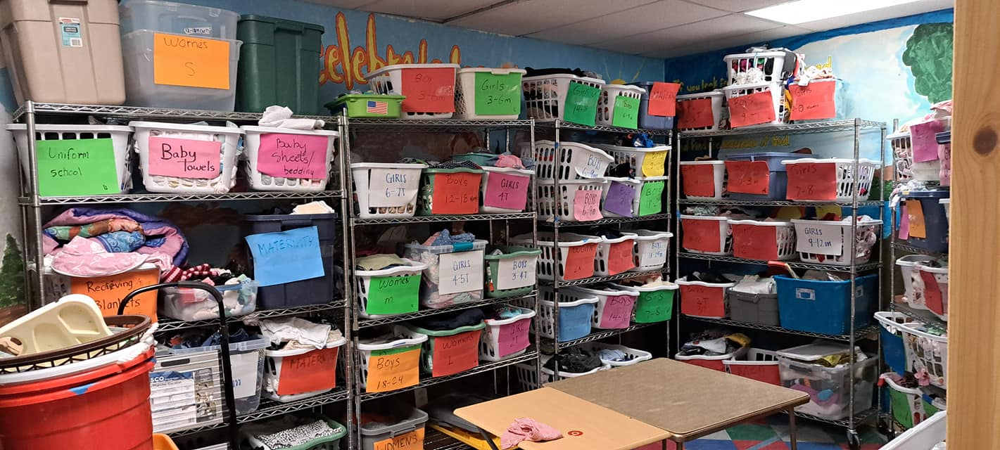
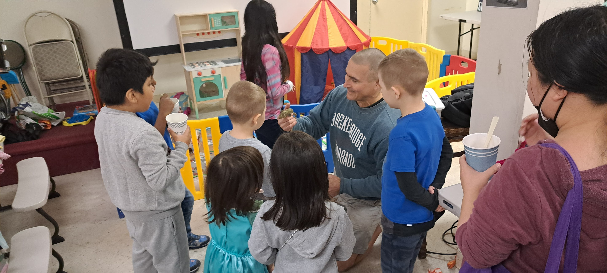
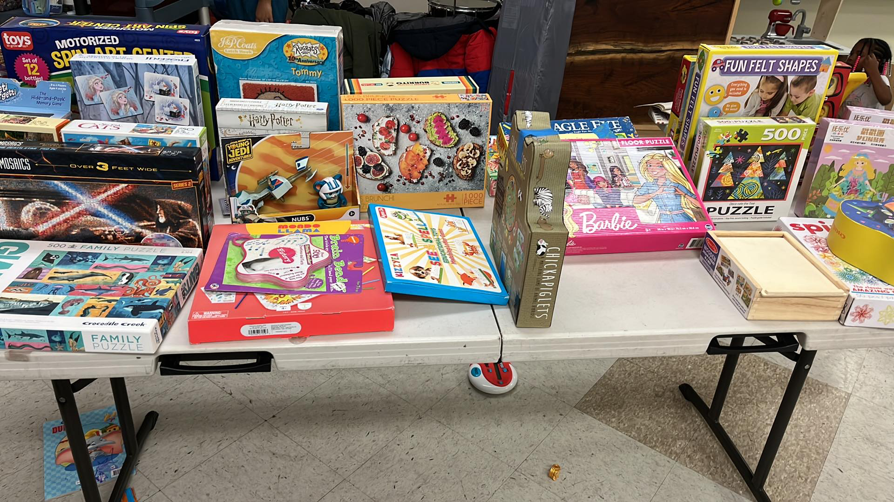
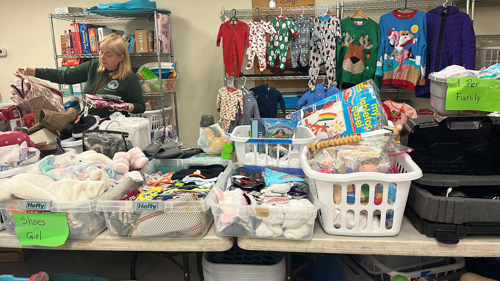
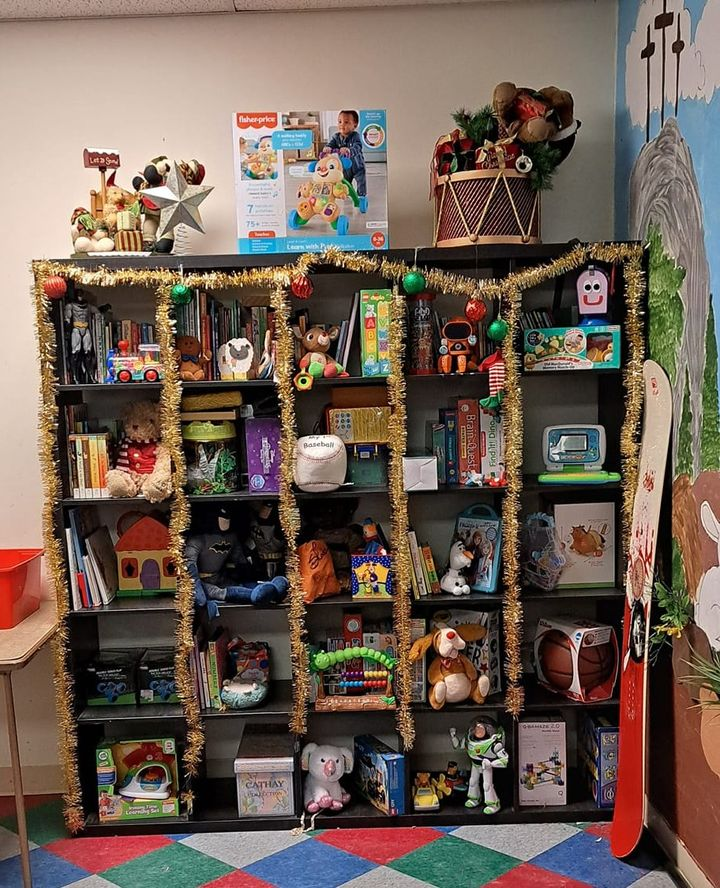

<div class="col-md-12 col-sm-12 col-xs-12 gray-background regular-padding-section black-border-bottom">
	<h1 class="main-header dark-gray-font"><span class="light-blue-underline">Free</span> Cycle</h1>
	<p class="main-paragraph">
    SHARING & CARING - The purpose of this group is to help build community between Maspeth Bible Church and our neighbors to recycle and reuse the items they no longer use that others might need or treasure. This is NOT a homeless ministry, but one that seeks to help ALL those who could benefit from sharing. Although If you know of someone in need of a referral, please let the admin know. Items are NOT for people outside our community. Any items that we decide are not worthy of freecycling will be tossed, and anything else that we cannot rehome ,will if possible, be passed on to other groups.
  </p>
  <p class="main-paragraph">
    <b>Please never drop off any items at the church without permission</b>
  </p>
  <p class="main-paragraph">For more info view our  <a href="https://www.facebook.com/groups/228339168878090">free cycle facebook page</a> or send us a message <a href="contact-us.html">here</a>. </p>

  <div class="pictures-container">

    </img>
    </img>
    </img>
    </img>
    </img>

	</div>
</div>


{% include schedule-section.html %}
